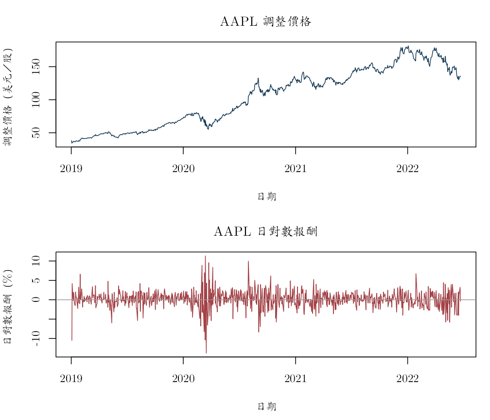
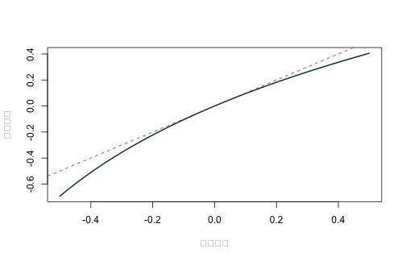

《財務時間序列分析》線上附錄
R02：價格、日期與報酬率
本附錄對應第 2 章，實際讀取 Apple Inc.（AAPL）的固定資料，從調整收盤價重新計算日簡單報酬與日對數報酬。樣本期間為 2019-01-02 至 2022-06-22，共 875 個交易日。adjusted 的單位是「美元／股的調整後價格尺度」；報酬欄位以小數表示，例如 0.01 代表 1%。資料來自原課程 S&P 500 價格檔所保留的 AAPL 序列，建置細節見 data/DATA_SOURCES.md。
以下結果描述這一份固定歷史資料的價格與報酬計算，不識別任何市場事件或變數對 AAPL 報酬的因果效果。
knitr::opts_chunk$set(
echo = TRUE, message = FALSE, warning = FALSE,
fig.width = 7, fig.height = 4.5,
dev = "ragg_png", dpi = 144,
dev.args = list(background = "white")
)
root_candidates <- c(".", "..")
is_root <- vapply(root_candidates, function(x) {
file.exists(file.path(x, "main.tex"))
}, logical(1))
stopifnot(any(is_root))
project_root <- root_candidates[which(is_root)[1]]
project_path <- function(...) file.path(project_root, ...)
stopifnot(
requireNamespace("ragg", quietly = TRUE),
requireNamespace("systemfonts", quietly = TRUE)
)
cwtex_file <- project_path("assets", "fonts", "cwTeXQKai-Medium.ttf")
stopifnot(file.exists(cwtex_file))
if (!"cwTeX Online" %in% systemfonts::registry_fonts()$family) {
systemfonts::register_font("cwTeX Online", cwtex_file)
}
plot_family <- "cwTeX Online"
讀取、排序與入口檢查#
金融資料不能先假定已依日期排序。以下先檢查欄位，再轉換日期、排序並檢查重複值與價格正值條件。
aapl_path <- project_path(
"data", "processed", "aapl_adjusted_daily_2019_2022.csv"
)
stopifnot(file.exists(aapl_path))
aapl <- read.csv(aapl_path, stringsAsFactors = FALSE)
needed <- c(
"date", "symbol", "company", "sector", "adjusted",
"simple_return", "log_return"
)
stopifnot(all(needed %in% names(aapl)))
aapl$date <- as.Date(aapl$date)
aapl <- aapl[order(aapl$date), ]
row.names(aapl) <- NULL
stopifnot(
!anyNA(aapl$date),
!anyDuplicated(aapl$date),
all(diff(aapl$date) > 0),
all(aapl$symbol == "AAPL"),
all(is.finite(aapl$adjusted)),
all(aapl$adjusted > 0)
)
data_profile <- data.frame(
資產 = unique(aapl$symbol),
起日 = min(aapl$date),
迄日 = max(aapl$date),
交易日數 = nrow(aapl),
價格單位 = "美元／股（調整後尺度）",
報酬單位 = "小數；0.01 代表 1%",
資料來源 = "原課程 S&P 500 價格檔的 AAPL 固定版本",
check.names = FALSE
)
knitr::kable(data_profile)
| 資產 | 起日 | 迄日 | 交易日數 | 價格單位 | 報酬單位 | 資料來源 |
|---|---|---|---|---|---|---|
| AAPL | 2019-01-02 | 2022-06-22 | 875 | 美元／股（調整後尺度） | 小數；0.01 代表 1% | 原課程 S&P 500 價格檔的 AAPL 固定版本 |
第一筆報酬沒有前一期價格，因此應為缺值；這不是資料錯誤。
colSums(is.na(aapl[c("adjusted", "simple_return", "log_return")]))
## adjusted simple_return log_return
## 0 1 1
stopifnot(
is.na(aapl$simple_return[1]),
is.na(aapl$log_return[1]),
!anyNA(aapl$simple_return[-1]),
!anyNA(aapl$log_return[-1])
)
由調整價格重新計算報酬#
若 $P_t^*$ 是同一調整尺度下的價格，則
\[ R_t=\frac{P_t^*}{P_{t-1}^*}-1, \qquad r_t=\log P_t^*-\log P_{t-1}^*=\log(1+R_t). \]
調整價格把供應者所採用的公司行動調整反映在同一價格尺度；若研究需要逐筆拆股或現金股利，仍須另讀公司行動資料字典，不能由本欄反推全部現金流。
aapl$calculated_simple <- c(
NA_real_,
aapl$adjusted[-1] / head(aapl$adjusted, -1) - 1
)
aapl$calculated_log <- c(NA_real_, diff(log(aapl$adjusted)))
calculation_error <- data.frame(
欄位 = c("simple_return", "log_return"),
最大絕對差 = c(
max(abs(aapl$simple_return - aapl$calculated_simple), na.rm = TRUE),
max(abs(aapl$log_return - aapl$calculated_log), na.rm = TRUE)
),
check.names = FALSE
)
knitr::kable(calculation_error, digits = 14)
| 欄位 | 最大絕對差 |
|---|---|
| simple_return | 0 |
| log_return | 0 |
stopifnot(
calculation_error$最大絕對差[1] < 1e-12,
calculation_error$最大絕對差[2] < 1e-12
)
knitr::kable(
head(aapl[c(
"date", "adjusted", "calculated_simple", "calculated_log"
)], 6),
digits = 6
)
| date | adjusted | calculated_simple | calculated_log |
|---|---|---|---|
| 2019-01-02 | 38.22136 | NA | NA |
| 2019-01-03 | 34.41423 | -0.099607 | -0.104924 |
| 2019-01-04 | 35.88335 | 0.042689 | 0.041803 |
| 2019-01-07 | 35.80349 | -0.002226 | -0.002228 |
| 2019-01-08 | 36.48602 | 0.019063 | 0.018884 |
| 2019-01-09 | 37.10561 | 0.016982 | 0.016839 |
原課程套件捷徑（與手動版並列）#
原課程的 AAPL scripts 先以 tidyquant::tq_get() 取得 Yahoo 資料，再用 dplyr::arrange()、mutate() 與 lag() 建立報酬。本書保留資料整理流程，但改讀上面的固定 CSV，避免供應者日後修訂資料。對應來源是 slides/L04_ARMA/W1L4_R_template_for_estimating_ARMA.R 與 slides/L07_ARCH_GARCH/W2L2_R_template_GARCH.R；以下不是另一組模擬資料。
stopifnot(requireNamespace("dplyr", quietly = TRUE))
returns_package <- aapl |>
dplyr::arrange(date) |>
dplyr::mutate(
simple_return_package =
adjusted / dplyr::lag(adjusted) - 1,
log_return_package =
log(adjusted) - log(dplyr::lag(adjusted))
)
package_return_check <- data.frame(
核對項目 = c(
"簡單報酬：套件版與手動版",
"對數報酬：套件版與手動版",
"簡單報酬：套件版與固定資料",
"對數報酬：套件版與固定資料"
),
最大絕對差 = c(
max(abs(
returns_package$simple_return_package -
aapl$calculated_simple
), na.rm = TRUE),
max(abs(
returns_package$log_return_package -
aapl$calculated_log
), na.rm = TRUE),
max(abs(
returns_package$simple_return_package -
aapl$simple_return
), na.rm = TRUE),
max(abs(
returns_package$log_return_package -
aapl$log_return
), na.rm = TRUE)
),
check.names = FALSE
)
knitr::kable(package_return_check, digits = 14)
| 核對項目 | 最大絕對差 |
|---|---|
| 簡單報酬：套件版與手動版 | 0 |
| 對數報酬：套件版與手動版 | 0 |
| 簡單報酬：套件版與固定資料 | 0 |
| 對數報酬：套件版與固定資料 | 0 |
stopifnot(
is.na(returns_package$simple_return_package[1]),
is.na(returns_package$log_return_package[1]),
max(package_return_check$最大絕對差) < 1e-12
)
這裡兩版應在浮點誤差內完全一致，因為它們只是用不同語法計算同一定義。套件縮短了資料操作程式，卻沒有消除「先排序、第一筆為缺值、必須使用同一調整價格尺度」等資料責任。
價格與報酬的時間圖#
old_par <- par(
mfrow = c(2, 1), mar = c(4.5, 4, 3, 1),
family = plot_family
)
plot(
aapl$date, aapl$adjusted, type = "l", col = "#173B57",
xlab = "日期", ylab = "調整價格（美元／股）",
main = "AAPL 調整價格"
)
plot(
aapl$date, 100 * aapl$log_return, type = "l", col = "#A34045",
xlab = "日期", ylab = "日對數報酬（%）",
main = "AAPL 日對數報酬"
)
abline(h = 0, col = "gray60")

par(old_par)
價格水準有明顯趨勢，不代表報酬本身也有相同趨勢。建模前必須先分清楚研究對象是價格、簡單報酬或對數報酬。
簡單報酬與對數報酬的差距#
小幅報酬時 $r_t\approx R_t$，大幅漲跌時兩者差距會擴大。下圖中的每一點都是 AAPL 的實際日報酬。
old_par <- par(family = plot_family)
plot(
100 * aapl$simple_return, 100 * aapl$log_return,
pch = 16, cex = 0.55, col = adjustcolor("#173B57", 0.55),
xlab = "日簡單報酬（%）", ylab = "日對數報酬（%）"
)
abline(0, 1, lty = 2, lwd = 2, col = "#A34045")

par(old_par)
多期複利必須乘，不是直接加#
從第一個調整價格到最後一個調整價格，三種算法應得到相同的多期簡單報酬：
- 每日簡單報酬逐期複利；
- 每日對數報酬相加後轉回簡單報酬；
- 最後價格除以最初價格再減一。
valid_simple <- aapl$simple_return[is.finite(aapl$simple_return)]
valid_log <- aapl$log_return[is.finite(aapl$log_return)]
compound_table <- data.frame(
方法 = c(
"每日簡單報酬複利",
"對數報酬相加後轉回",
"期末調整價格／期初調整價格"
),
全期簡單報酬 = c(
prod(1 + valid_simple) - 1,
exp(sum(valid_log)) - 1,
tail(aapl$adjusted, 1) / aapl$adjusted[1] - 1
),
check.names = FALSE
)
knitr::kable(compound_table, digits = 8)
| 方法 | 全期簡單報酬 |
|---|---|
| 每日簡單報酬複利 | 2.541213 |
| 對數報酬相加後轉回 | 2.541213 |
| 期末調整價格／期初調整價格 | 2.541213 |
stopifnot(diff(range(compound_table$全期簡單報酬)) < 1e-12)
這個全期報酬只描述所選起迄日；不能把它外推成固定的未來成長率。
交易日與日曆日不同#
相鄰交易日可能跨過週末或休市日。calendar_gap 的單位是日曆日，不是遺漏的報酬筆數。
aapl$calendar_gap <- c(NA_integer_, as.integer(diff(aapl$date)))
gap_table <- as.data.frame(table(aapl$calendar_gap, useNA = "no"))
names(gap_table) <- c("相鄰交易日的日曆間隔", "次數")
knitr::kable(gap_table)
| 相鄰交易日的日曆間隔 | 次數 |
|---|---|
| 1 | 687 |
| 2 | 6 |
| 3 | 156 |
| 4 | 25 |
若要年度化波動、合併不同市場或對齊總體資料，必須另外交代交易日曆、時區與缺值規則。
極端日先查來源，不自動刪除#
valid_rows <- aapl[is.finite(aapl$log_return), ]
extreme_rows <- valid_rows[
order(abs(valid_rows$log_return), decreasing = TRUE)[1:8],
c("date", "adjusted", "simple_return", "log_return")
]
knitr::kable(extreme_rows, digits = 6)
| date | adjusted | simple_return | log_return | |
|---|---|---|---|---|
| 303 | 2020-03-16 | 59.64409 | -0.128647 | -0.137708 |
| 302 | 2020-03-13 | 68.44997 | 0.119808 | 0.113157 |
| 2 | 2019-01-03 | 34.41423 | -0.099607 | -0.104924 |
| 301 | 2020-03-12 | 61.12651 | -0.098755 | -0.103978 |
| 399 | 2020-07-31 | 104.94921 | 0.104689 | 0.099564 |
| 309 | 2020-03-24 | 60.79407 | 0.100325 | 0.095606 |
| 293 | 2020-03-02 | 73.58179 | 0.093101 | 0.089018 |
| 318 | 2020-04-06 | 64.63309 | 0.087237 | 0.083640 |
極端報酬可能是市場事件，也可能是公司行動或建檔錯誤。這張表只負責定位日期；是否修正必須回到原始來源查證，而不能因為觀察值「看起來太大」就刪除。